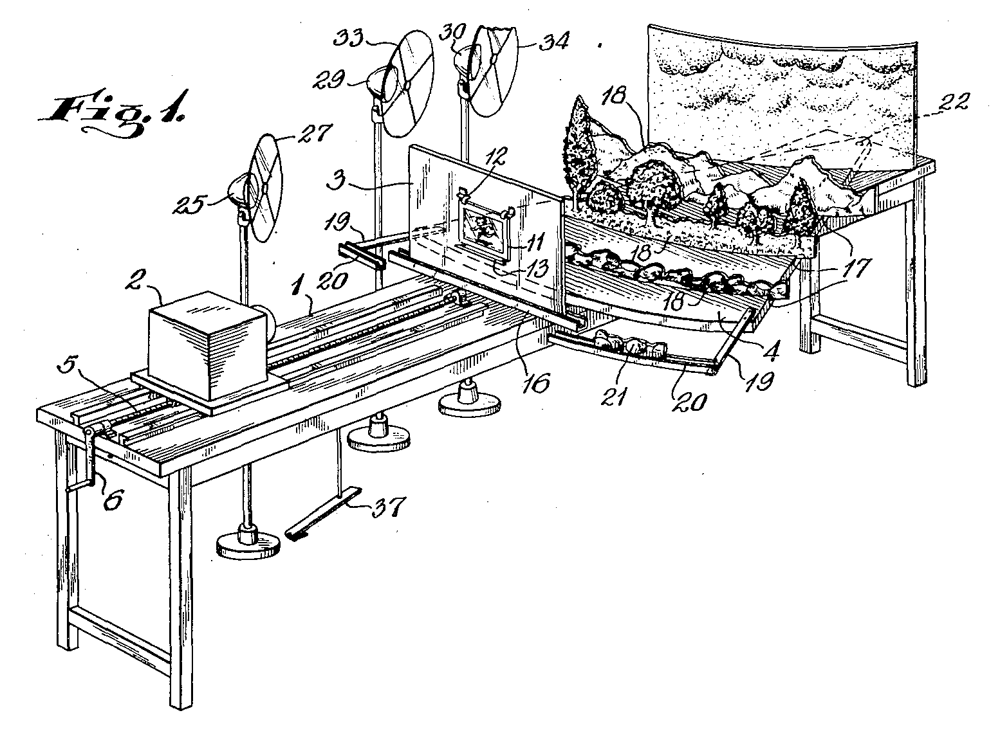
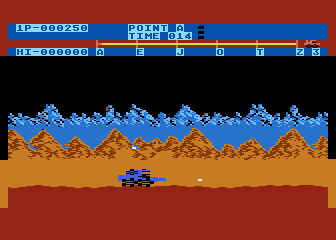

Parallax
Scrolling
dos games à web
Talita Goulart
Desenvolvedora front-end
talita_goulart@yahoo.com.br - @talitacgo
Paralaxe
Deslocamento aparente de um objeto, quando se muda o ponto de observação.
Paralaxe na animação
Stereoptical camera
Fleisher Studio - 1934
Multiplane camera
Walt Disney Animation Studios - 1933
Parallax scrolling em games

Moon Patrol - 1982
Shadow of the Beast - 1989

Super Mario World - 1990

Parallax Scrolling na Web
Busca pelo termo parallax
Buscas relacionadas a parallax scrolling
Exemplos de Parallax scrolling em sites
Exemplos de Parallax scrolling em sites
Como aplicar?
Página estática
Aplicando um pouco de js
Puro CSS
Editor online: http://dabblet.com/gist/6959829Junto e misturado
Um exemplo mais real
Exemplo adaptado de http://tableless.com.br/parallax-simples-com-jquery-e-css/Plugins
Skrollr - http://prinzhorn.github.io/skrollr/
WOOOT
Stellar.js - http://markdalgleish.com/projects/stellar.js/